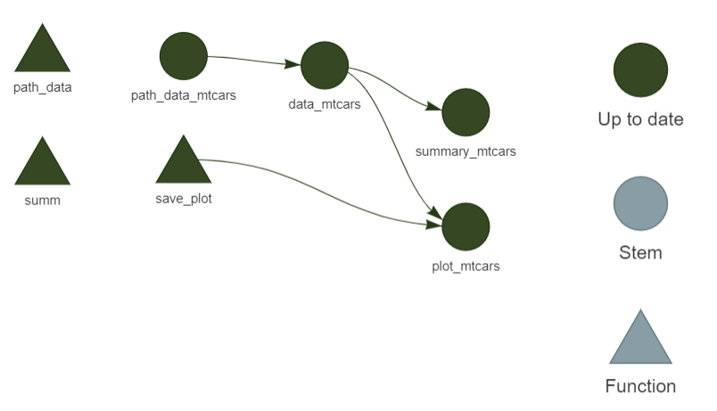
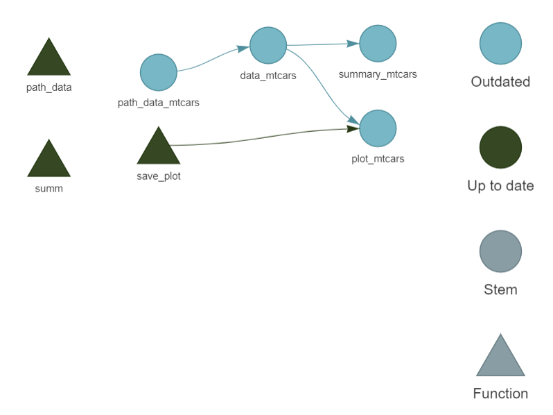
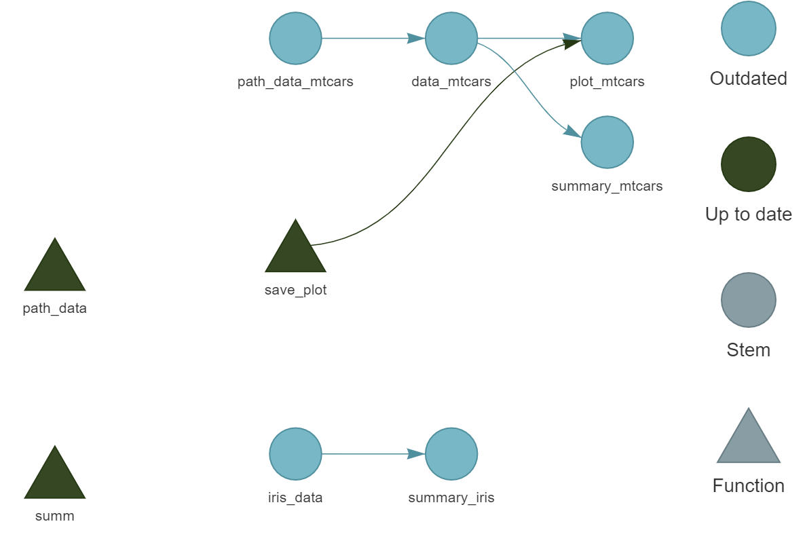
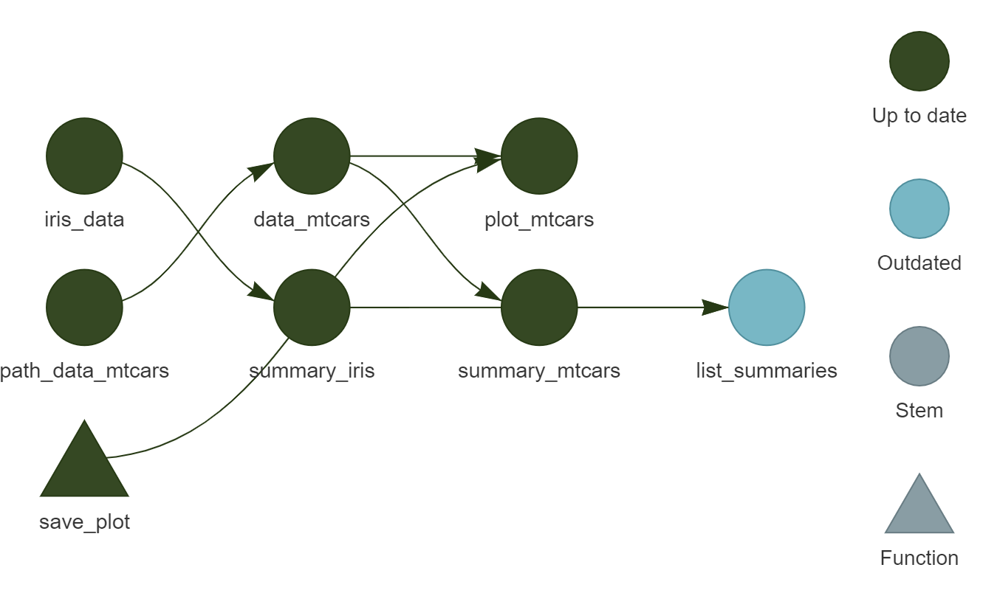
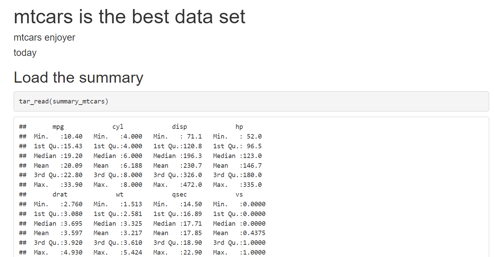
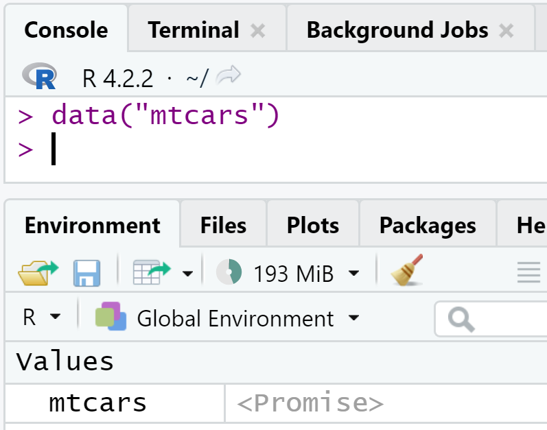

targets::tar_script()13 Automatização com {targets}
Finalmente estamos prontos para construir um pipeline. Para isto, vamos utilizar o pacote {targets} (Landau 2021) que é uma “ferramenta para construir automatização”.
Se voltarmos ao iceberg da reproducibilidade, veremos que já estamos bem no fundo.
Sem uma ferramenta para construir automatização, um pipeline não é mais do que um conjunto de scripts que são executados uns atrás dos outros, ou talvez apenas um script muito longo que consegue fazer as operações com sucesso.
No entanto há vários problemas nesta abordagem, pelo que vamos ver como podemos construir uma automatização.
13.1 Introdução
Os workflows que têm por base vários scripts podem ser muito problemáticos. Primeiro os scripts podem e vão ser executados fora de ordem. Podemos mitigar alguns dos problemas que isto pode criar, usando funções puras, mas ainda assim temos de garantir que não executamos os nossos scripts fora de ordem. Mas o que é que isto significa? Bem, suponhamos que alteramos uma função e que agora só queremos voltar a executar as partes do workflow afetadas por esta mudança.Para isto temos de saber de memória quais são as partes dos scripts que são afetadas e quais não. O que pode ser bem complicado, principalmente com pipelines grandes. Pelo que iremos executar apenas algumas partes, esperando que não precisemos de voltar a executar tudo de novo.
Outro problema é que os pipelines em scripts são difíceis de ler e de compreender. Para mitigarmos isto podemos escrever muitos comentários mas temos o problema de também fazer a manutenção desses comentários. Quando o código e os comentários deixam de estar sincronizados começam (ou melhor, continuam) os problemas.
Executar diferentes partes do pipeline em paralelo também é muito complicado se o nosso pipeline está definido em scripts. Teremos de partir o script em partes independentes (garantindo que de facto são independentes) e executá-las em paralelo, talvez usando diferentes sessões de R para cada novo script. As boas notícias é que temos usado progamação funcional pelo que o nosso pipeline é um conjunto de funções puras, o que simplifica a execução do pipeline em paralelo.
Mas já devemos suspeitar que os engenheiros de software também se depararam com problemas semelhantes no desenvolvimento de software, e também devemos saber que eles encontraram uma forma de contornar este problema. Que entrem as ferramentas de construção de automatização.
Quando construímos uma ferramenta para construir automatização, estamos a escrever uma receita que define como o código fonte deve ser ‘cozinhado’ num software (ou, no nosso caso, num report, numa tabela de dados ou num qualquer produto de dados).
Uma ferramenta de automatização deve rastrear:
- qualquer alteração em qualquer parte do código. Apenas os outputs que são afetados pelas alterações que fizemos devem ser re-executados (bem como as suas dependências);
- qualquer alteração em qualquer dos ficheiros rastreados. Por exemplo, se um ficheiro de dados é atualizado periodicamente, podemos rastrear este ficheiro e a ferramenta de construção de automatização apenas executa as partes do pipeline que são afetadas por esta atualização de dados;
- quais as partes que podem ser executadas em paralelo com segurança (com a opção de executar o pipeline em multiplos cores CPU).
Tal como muitas outras ferramentas que já vimos neste livro, as ferramentas de construção de automatização permitem-nos não depender da nossa memória. Escrevemos a receita uma vez e podemos voltar a preocupar-nos apenas com o código do nosso projecto. Não nos devemos preocupar com o próprio pipeline, nem pensar na melhor maneira de o executar. Deixemos o computador preocupar-se com isso, de certeza que é melhor do que nós nessas tarefas.
13.2 Inicialização rápida com o {targets}
Antes de mais: para sabermos tudo sobre o pacote {targets} devemos ler o excelente manual do {targets}1. Está tudo lá. O que iremos ver aqui é apenas uma rápida introdução a alguns dos pontos principais que precisamos conhecer para começar.
Vamos criar uma nova pasta chamada targets_intro/, e começar uma nova sessão do R. Para já podemos ignorar o {renv}. Mais à frente poderemos ver como o {renv} trabalha com o {targets} para produzir um pipeline que é quase completamente reprodutível. Na nova sessão e dentro da pasta targets_intro/ vamos executar o comando:
Com isto criaremos um ficheiro template _targets.R nesta directoria. É neste ficheiro que vamos definir o nosso pipeline. Podemos abri-lo e ver que é definido basicamente em três partes:
- primeiro são definidos os pacotes a usar e as funções de ajuda;
- depois vêm as opções específicas do pipeline;
- e por fim o próprio pipeline, definido como um conjunto de targets.
Vejamos cada uma destas parte individualmente.
13.2.1 A anatomia do _targets.R
Na primeira parte do pipeline definimos os pacotes que vamos usar, bem como as funções de ajuda que queremos carregar. No template, a primeira linha tem library(targets) seguido pela definição duma função. Há duas coisas que importa sublinhar.
Se o nosso pipeline precisa do pacote {dplyr} (por exemplo), podemos escrever library(dplyr) logo depois de library(targets). No entanto, é melhor carregarmos os pacotes com a função tar_option_set(packages = "dplyr"). Isto porque se executamos o pipeline em paralelo, temos de garantir que os pacotes estão disponíveis para todos os workers (geralmente, um worker por cada core CPU). Se carregarmos os pacotes no início do ficheiro _targets.R, os pacotes apenas estarão disponíveis na sessão original que executa o comando library(...), mas não para as sessões dos workers chamados para a execução em paralelo.
A ideia é que no início do nosso script apenas lemos o pacote {targets} e ventualmente outros que sejam necessários para executar o próprio pipeline (como veremos mais à frente). Mas os pacotes que são necessários para executarmos funções que são usadas dentro do nosso pipeline devem ser carregados com tar_option_set(packages = "..."). Dito de outra forma: no início do script devemos ter pacote para a infaestrutura do pipeline ({targets} e mais algum), mas em {tar_option_set()} pacotes para as funções executadas dentro do pipeline.
Na segunda parte é onde definimos algumas das opções globais para o pipeline. Como já referimos, é aqui que definimos os pacotes usados dentro do pipeline. Não vamos listar aqui todas as opções porque apenas estariamos a repetir o que está na documentação2. Nesta segunda parte também podemos definir algumas funções que podem ser necessárias para executarmos o nosso pipeline. Por exemplo, podemos definir funções para ler e limpar dados. Se criarmos um package para o nosso projecto, podemos usá-lo e não precisariamos de outras funções. No entanto, às vezes não precisamos de criar um package e apenas fazemos algumas funções que nos ajudam na nossa análise, neste caso podemos defini-las directamente no início do nosso ficheiro _targets.R ou então num ficheiro em separado dentro duma pasta functions/ na mesma directoria do _targets.R. A escolha é de cada um, mas a segunda opção é mais recomendável. No script de exemplo, definimos a seguinte função:
summarize_data <- function(dataset) {
colMeans(dataset)
}Finalmente, temos o próprio pipeline:
list(
tar_target(data,
data.frame(x = sample.int(100),
y = sample.int(100))),
tar_target(data_summary,
summarize_data(data)) # Call your custom functions.
)O pipeline mais não é que uma lista de targets. Definimos um target com a função tar_target() que tem pelo menos dois inputs: o primeiro é o nome do target (sem aspas) e o segundo é a função que gera o target. Logo um target definido como tar_target(y, f(x)) pode ser lido como y <- f(x). O target seguinte pode usar como input o output dum target anterior, pelo que podemos ter qualquer coisa como tar_target(z, f(y)) (tal como no template de exemplo).
13.3 Um pipeline é composto por funções puras
Podemos executar este pipeline, com o comando:
targets::tar_make()• start target data
• built target data [0.82 seconds]
• start target data_summary
• built target data_summary [0.02 seconds]
• end pipeline [1.71 seconds]O pipeline finalizou e agora? Este pipeline fez algumas estatisticas sumárias mas para onde foram? Se fizermos data_summary para tentarmos ver algum resultado temos um erro:
data_summaryError: object 'data_summary' not foundO que aconteceu?
Temos de nos lembrar que queremos que o nosso pipeline seja uma sequência de funções puras. Isto é, o sucesso da execução do nosso pipeline não deve depender de nada que esteja no ambiente global (para além de ler os pacotes da primeira parte do script e das opções definidas em tar_option_set()) e não deve alterar nada fora do seu próprio âmbito. Ou seja, o pipeline não deve alterar nada do ambiente global. É exactamente assim que um pipeline definido com {targets} funciona. Um pipeline definido usando o {targets} será puro e o seu output não garavará nada no ambiente global. Em termos estritos um pipeline não é exactamente puro. Vejamos a pasta que contém o script _targets.R. Temos agora a pasta _targets/. Se virmos dentro desta nova pasta e dentro da pasta objects/, temos dois objectos, data e data_summary. Estes são os outputs do pipeline.
Cada target definido dentro do nosso pipeline é gravado no formato .rds. Este é um formato específico do R que podemos usar para guardar qualquer tipo de objecto. Não importa o quê: um dataframe, um modelo, um ggplot, qualquer objecto que possamos ter em R pode ser gravado em disco com a função saveRDS() e posteriormente ser lido noutra sessão com readRDS(). O {targets} usa estas duas funções para guardar os resultados dos targets do nosso pipeline e também para aceder a eles a partir da pasta _targets/ em vez de os voltar a computar. Devemos ter sempre presente que se usarmos o Git para versionar o nosso código (tal como fazemos aqui) devemos adicionar a pasta _targets/ ao ficheiro .gitignore.
Como o nosso pipeline é puro nenhum resultado dos targets é gravado no ambiente global, pelo que se quisermos aceder aos seus outputs temos de usar as funções tar_read() ou tar_load(). A diferença é que tar_read() apenas lê o target e imprime-o na consola, enquanto que tar_load() lê o target e carrega-o no ambiente global. No nosso exemplo, para extrairmos o object data_summary usamos tar_load(data_summary):
tar_load(data_summary)e agora quando escrevemos data_summary, temos:
data_summary x y
50.5 50.5Podemos também carregar todos os targets duma vez com tar_load_everything(), para não termos de carregar os targets um a um.
Antes de continuarmos a ver mais características do {targets} devemos ter presente que um pipeline é composto por funções puras. Logo funções que tenham efeitos colaterais (como as que lêm dados ou imprimem alguma coisa no ecrã) são mais difíceis de manipular. Por exemplo, para fazermos um gráfico com o R base temos de fazer uma série de chamadas de funções com efeitos colaterais. Se abrirmos uma consola e escrevermos plot(mtcars), vamos ver um gráfico. Mas a função plot() não cria qualquer output. Apenas imprime uma imagem no nosso ecrã, o que é um efeito colateral. Podemos verificar isto se tentarmos guardar plot() numa variável:
a <- plot(mtcars)ao fazermos isto vemos o gráfico mas quando executamos a variável a, o gráfico não aparece:
aNULLE porque plot() não é uma função pura se a tentarmos usar num pipeline {targets} teremos como resultado NULL, quando tentarmos ler o target que deveria ter o gráfico:
list(
tar_target(data,
data.frame(x = sample.int(100),
y = sample.int(100))),
tar_target(data_summary,
summarize_data(data)), # Call your custom functions.
tar_target(
data_plot,
plot(data)
)
)Apenas adicionamos um novo target com tar_target() para fazermos um gráfico. Se voltarmos a fazer tar_make() e depois tar_load(data_plot) para carregarmos o novo target, ao escrevermos data_plot apenas é impresso NULL e não vemos nenhum gráfico.
Podemos dar a volta a este problema usando o ggplot(). Isto porque o output do ggplot() é um objecto do tipo ggplot. Podemos fazer qualquer coisa como a <- ggplot() + ect.. e depois escrevemos a para ver o gráfico. Se fizermos str(a) podemos ver a lista que tem a estrutura do gráfico.
Outra forma de contornar o problema é gravar o gráfico em disco. Para isto temos de escrever uma nova função, por exemplo:
save_plot <- function(filename, ...){
png(filename = filename)
plot(...)
dev.off()
}Se definirmos esta função no inicio do script do ficheiro _targets.R, podemos usar esta função em vez de plot() no último target:
summarize_data <- function(dataset) {
colMeans(dataset)
}
save_plot <- function(filename, ...){
png(filename = filename)
plot(...)
dev.off()
filename
}
# Set target-specific options such as packages.
tar_option_set(packages = "dplyr")
# End this file with a list of target objects.
list(
tar_target(data,
data.frame(x = sample.int(100),
y = sample.int(100))),
tar_target(data_summary,
summarize_data(data)), # Call your custom functions.
tar_target(
data_plot,
save_plot(
filename = "my_plot.png",
data),
format = "file")
)Depois de executarmos este pipeline veremos um ficheiro chamado my_plot.png na pasta do pipeline. Se escrevermos tar_load(data_plot) e depois data_plot veremos o argumento filename de save_plot(). Isto porque o target tem de devolver alguma coisa e no caso de funções que gravam ficheiros em disco é recomendável devolver o caminho onde o ficheiro foi gravado. Assim se quisermos usar o ficheiro noutro target, podemos escrever tar_target(x, f(data_plot)). Assim, uma vez que o target data_plot devolve um caminho, podemos escrever f() de forma a qua saiba como usar o caminho. Se escrevessemos tar_target(x, f("path/to/my_plot.png")), então o {targets} não tinha como saber que o target x depende do target data_plot. Não existiria uma dependência entre targets.
Por fim, no último target tivemos de usar a opção format = file que será aprofundada mais à frente.
Vale a pena realçar que o pacote {ggplot2} tem uma função que permite gravar objectos ggplot no disco ggplot2::ggsave(). Assim poderiamos ter definido dois targets, um para fazer o objecto ggplot e outro para gerar a imagem .png desse objecto.
13.4 Tratar ficheiros
Nesta secção, vamos ver como o {targets} lida com ficheiros. Primeiro vamos executar as seguintes linhas de código na pasta que tem o script _targets.R que temos estado a usar:
data(mtcars)
write.csv(mtcars,
"mtcars.csv",
row.names = F)Acabamos de criar o ficheiro mtcars.csv na nossa pasta. Vamos agora usá-lo no nosso pipeline.
Escrevemos o seguinte pipeline:
list(
tar_target(
data_mtcars,
read.csv("mtcars.csv")
),
tar_target(
summary_mtcars,
summary(data_mtcars)
),
tar_target(
plot_mtcars,
save_plot(
filename = "mtcars_plot.png",
data_mtcars),
format = "file")
)Podemos correr o pipeline e no fim teremos um gráfico. O problema é que o ficheiro mtcars.csv não está a ter registo de alterações. Se fizermos uma alteração ao ficheiro, como por exemplo:
write.csv(head(mtcars), "mtcars.csv", row.names = F)Ao voltarmos a executar o pipeline, as nossas alterações aos dados foram ignoradas:
✔ skip target data_mtcars
✔ skip target plot_mtcars
✔ skip target summary_mtcars
✔ skip pipeline [0.1 seconds]Como podemos ver, o {targets} não está a registar as alerações no ficheiro mtcars.csv. Assim, o pipeline está up-to-date para o {targets} pois para ele não houve alterações.
Vamos voltar a alterar o nosso ficheiro:
write.csv(mtcars, "mtcars.csv", row.names = F)Agora alteramos o primeiro target para que as alterações do ficheiro sejam rastreadas. Lembremo-nos que os targets têm de ser funções puras que devolvem alguma coisa. Logo vamos alterar o primeiro target para que devolva o caminho para o ficheiro, usado a opção format = "file" em tar_target():
path_data <- function(path){
path
}
list(
tar_target(
path_data_mtcars,
path_data("mtcars.csv"),
format = "file"
),
tar_target(
data_mtcars,
read.csv(path_data_mtcars)
),
tar_target(
summary_mtcars,
summary(data_mtcars)
),
tar_target(
plot_mtcars,
save_plot(filename = "mtcars_plot.png",
data_mtcars),
format = "file")
)O primeiro target poderá ser simplesmente escrito como:
tar_target(
path_data_mtcars,
"mtcars.csv",
format = "file"
)Agora temos o target chamado path_data_mtcars que apenas devolve o caminho para os dados. Mas como usámos a opção format = "file", o {targets} já sabe que deve rastrear esse ficheiro. Ou seja, qualquer alteração ao ficheiro será reconhecida e qualquer target que dependa desse input será marcado como estando out-of-date. Os restantes targets permanecem iguais.
Executemos o pipeline com tar_make(). Agora, vamos alterar o ficheiro outra vez:
write.csv(head(mtcars),
"mtcars.csv",
row.names = F)Se voltarmos a executar o pipeline com tar_make() podemos ve que o {targets} reconhece que há alterações e executa o pipeline tendo em conta essas alterações.
13.5 O gráfico de dependências
Como podemos ver o {targets} faz o rastreamento das alterações aos ficheiros e também às funções que usamos. Qualquer alteração no código de alguma dessas funções fará com que o {targets} identifique quais os targets que estão out-of-date e quais os que devem ser recalculados junto com os que dependam destes. Podemos visualizar isto com a função tar_visnetwork(). Com isto abrimos um gráfico de rede interactivo no nosso browser:

Aqui podemos ver que todos os targets estão up-to-date. Se fizermos uma alteração aos dados de input, é este o resultado:

Como todos os target dependem dos dados de input, temos de volatr a executar todo o pipeline. Vamos voltar a executar tudo com tar_make(), antes de continuarmos.
Podemos agora adicionar outro target ao nosso pipeline, um que não dependa dos dados de input. O script deverá ficar assim:
list(
tar_target(
path_data_mtcars,
"mtcars.csv",
format = "file"
),
tar_target(
data_iris,
data("iris")
),
tar_target(
summary_iris,
summary(data_iris)
),
tar_target(
data_mtcars,
read.csv(path_data_mtcars)
),
tar_target(
summary_mtcars,
summary(data_mtcars)
),
tar_target(
plot_mtcars,
save_plot(
filename = "mtcars_plot.png",
data_mtcars),
format = "file")
)Antes de voltarmos a executar o pipeline, vejamos o workflow com tar_visnetwork():

Podemos ver que há duas partes independentes, bem como duas funções que não estão a ser usadas, path_data() e summ() que poderíamos remover. Depois podemos alterar de novo os dados de input e se corrermos o pipeline com tar_make() seremos bem sucedidos.
Vamos adicionar o último target:
tar_target(
list_summaries,
list(
"summary_iris" = summary_iris,
"summary_mtcars" = summary_mtcars
)
),este target cria uma lista com dois sumários que calculamos, e ao chamarmos tar_visnetwork():

Finalmente, voltamos a executar o pipeline uma última vez para obtermos o output final.
13.6 Executar o pipeline em paralelo
Com o {targets} podemos executar partes independentes do noso pipeline em paralelo. No exemplo anterior é óbvio quais as partes que são independentes mas quando o pipeline cresce em complexidade pode ser bem difícil encontrar as partes que são independentes.
Vamos então executar o exemplo anterior em paralelo. Mas primeiro vamos criar uma função que demora algum tempo a executar. A função summary() é tão rápida que não vale a pena executarmos duas chamadas desta função em paralelo (na verdade até demoraria mais, como veremos no fim). Vamos então definir a nova função slow_summary():
slow_summary <- function(...){
Sys.sleep(30)
summary(...)
}e vamos substituir summary() por slow_summary(), no nosso pipeline:
list(
tar_target(
path_data_mtcars,
"mtcars.csv",
format = "file"
),
tar_target(
data_iris,
data("iris")
),
tar_target(
summary_iris,
slow_summary(data_iris)
),
tar_target(
data_mtcars,
read.csv(path_data_mtcars)
),
tar_target(
summary_mtcars,
slow_summary(data_mtcars)
),
tar_target(
list_summaries,
list(
"summary_iris" = summary_iris,
"summary_mtcars" = summary_mtcars
)
),
tar_target(
plot_mtcars,
save_plot(filename = "mtcars_plot.png",
data_mtcars),
format = "file")
)este é o aspecto do pipeline, antes de ser executado:

podemos também reparar que removemos as funções não utilizadas path_data() e summ()
A execução deste pipeline sequencialmente demorará cerca de 1 minuto, uma vez que cada chamada de slow_summary() demora 30 segundos. Para voltarmos a executar o pipeline, fazemos tar_destroy() (e apagamos todos os targets criados) e depois tar_make():
targets::tar_make()• start target path_data_mtcars
• built target path_data_mtcars [0.18 seconds]
• start target data_iris
• built target data_iris [0 seconds]
• start target data_mtcars
• built target data_mtcars [0 seconds]
• start target summary_iris
• built target summary_iris [30.26 seconds]
• start target plot_mtcars
• built target plot_mtcars [0.16 seconds]
• start target summary_mtcars
• built target summary_mtcars [30.29 seconds]
• start target list_summaries
• built target list_summaries [0 seconds]
• end pipeline [1.019 minutes]Uma vez que a computação de summary_iris é completamente independente de summary_mtcars, estas computações podem ser feitas em paralelo por dois cores CPU em paralelo. Para isto precisamos de dois novos pacotes, {future} e {future.callr} no início do nosso script. Vamos també precisar de chamar plan(callr) antes do início do pipeline. Vejamos o _targets.R completo:
library(targets)
library(future)
library(future.callr)
plan(callr)
# Sometimes you gotta take your time
slow_summary <- function(...) {
Sys.sleep(30)
summary(...)
}
# Save plot to disk
save_plot <- function(filename, ...){
png(filename = filename)
plot(...)
dev.off()
filename
}
# Set target-specific options such as packages.
tar_option_set(packages = "dplyr")
list(
tar_target(
path_data_mtcars,
"mtcars.csv",
format = "file"
),
tar_target(
data_iris,
data("iris")
),
tar_target(
summary_iris,
slow_summary(data_iris)
),
tar_target(
data_mtcars,
read.csv(path_data_mtcars)
),
tar_target(
summary_mtcars,
slow_summary(data_mtcars)
),
tar_target(
list_summaries,
list(
"summary_iris" = summary_iris,
"summary_mtcars" = summary_mtcars
)
),
tar_target(
plot_mtcars,
save_plot(
filename = "mtcars_plot.png",
data_mtcars),
format = "file")
)POdemos então executar este pipeline em paralelo usando tar_make_future() (ou sequencialmente com tar_make()). Para construirmos o pipeline do zero, fazemos tar_destroy() e depois tar_make_future():
# Set workers = 2 to use 2 cpu cores
targets::tar_make_future(workers = 2)• start target path_data_mtcars
• start target data_iris
• built target path_data_mtcars [0.2 seconds]
• start target data_mtcars
• built target data_iris [0.22 seconds]
• start target summary_iris
• built target data_mtcars [0.2 seconds]
• start target plot_mtcars
• built target plot_mtcars [0.35 seconds]
• start target summary_mtcars
• built target summary_iris [30.5 seconds]
• built target summary_mtcars [30.52 seconds]
• start target list_summaries
• built target list_summaries [0.21 seconds]
• end pipeline [38.72 seconds]Como podemos ver, foi mais rápido mas não demorou metado do tempo. A razão de ser mais rápido mas não 2x mais rápido deve-se ao facto de haver alguma sobrecarga quando se corre código em paralelo. Novas sessões do R têm de ser espalhadas pelos targets, os dados precisam de ser transferidos e os pacotes precisão de ser carregados nessas novas sessões. Por isso é que só vale a pena paralelizar código que demora algum tempo a ser executado. Se reduzirmos o número de segundos da função slow_summary(...) (por exemplo para 10), executar o código em paralelo pode ser mais lento do que executar o código sequencialmente, devido a essa sobrecarga. Mas se tivermos várias computações que demoram algum tempo, vale a pena defenirmos o setup inicial para a computação paralela. Ou seja, para executarmos o nosso pipeline em paralelo, as sessões extra de workers que são geradas pelo {targets} precisam de saber que pacotes devem usar e é também por isto que é importante carregarmos os pacotes que o pipeline precisa de usar:
tar_option_set(packages = "dplyr")13.7 O {targets} e o RMarkdown (ou o Quarto)
Também é possível compilar documentos usando o RMarkdown (ou Quarto) com o {targets}. Para isto definimos um pipeline com os outputs que precisamos no documento e depois definimos o documento como um target a ser também computado. Por exemplo se queremos mostrar uma tabela no documento, definimos um pipeline que tem um target que constrói os dados para a tabela. Fazemos o mesmo para um gráfico ou um modelo estatístico. No ficheiro .Rmd (ou .Qmd), usamos targets::tar_read() para carregarmos os vários objectos que precisamos.
Vejamos o seguinte ficheiro _targets.R:
library(targets)
tar_option_set(packages = c("dplyr", "ggplot2"))
list(
tar_target(
path_data_mtcars,
"mtcars.csv",
format = "file"
),
tar_target(
data_mtcars,
read.csv(path_data_mtcars)
),
tar_target(
summary_mtcars,
summary(data_mtcars)
),
tar_target(
clean_mtcars,
mutate(data_mtcars,
am = as.character(am))
),
tar_target(
plot_mtcars,
{ggplot(clean_mtcars) +
geom_point(aes(y = mpg,
x = hp,
shape = am))}
)
)Este pipeline lê o ficheiro .csv anterior e cria um resumo dos dados e um gráfico. Mas não queremos apenas que esses objectos sejam guardados como ficheiros .rds, queremos usá-los para fazer o nosso documento (seja em formato .Rmd ou .Qmd). Para isto precisamos de outro pacote, {tarchtypes}. Este pacote têm muitas funções que nos permitem definir novos tipos de targets (a essas funções chamamos de fábrica de targets). A nova fábrica de targets que precisamos é tarchetypes::tar_render(). Como o nome indica, esta função faz a renderização dum ficheiro .Rmd. Podemos então escrever um ficheiro .Rmd (como em baixo) e guardá-lo junto ao nosso pipeline:
---
title: "mtcars is the best data set"
author: "mtcars enjoyer"
date: today
---
## Load the summary
```{r}
tar_read(summary_mtcars)
```NO nosso ficheiro _targets.R, carregamos o {tarchetypes} no início do ficheiro e adicionamos um novo target no final:
library(targets)
library(tarchetypes)
tar_option_set(packages = c("dplyr", "ggplot2"))
list(
tar_target(
path_data_mtcars,
"mtcars.csv",
format = "file"
),
tar_target(
data_mtcars,
read.csv(path_data_mtcars)
),
tar_target(
summary_mtcars,
summary(data_mtcars)
),
tar_target(
clean_mtcars,
mutate(data_mtcars,
am = as.character(am))
),
tar_target(
plot_mtcars,
{ggplot(clean_mtcars) +
geom_point(aes(y = mpg,
x = hp,
shape = am))}
),
tar_render(
my_doc,
"my_document.Rmd"
)
)Ao executarmos o nosso pipeline com tar_make() estamos a compilar o ficheiro .Rmd num ficheiro .html que podemos abrir no nosso browser. Mesmo que a nossa intenção seja compilar o documento noutro formado, é avisado fazer a compilação para .html, no desenvolvimento. Assim podemos abrir o ficheiro .html no browser e continuar a trabalhar no ficheiro fonte, sempre que executamos o pipeline com alterações ao documento, apenas temos de refrescar o browser para vermos essas alterações. Se a compilação for, por exemplo, para um documento Word, temos de fechar e voltar a abrir o documento se quisermos ver as alterações, o que pode ser irritante. A outra razão prende-se com o facto do output de ficheiro .html ser um formato de apenas-texto e como tal pode ser rastreado por um sistema de controlo de versões. No entanto, devemos ter presente que os ficheiros .html podem ser demasiado grandes e nesse caso não nos interessa rastreá-los, apenas queremos rastrear a sua fonte (os ficheiros .Rmd).
Se abrirmos o ficheiro de output, devemos ver algo como isto:

No final terá um aspecto mais bonito. Não vale a pena perdermos tempo em fazer coisas bonitas, logo no início. Idealmente, tentamos executar o nosso pipeline com exemplos simples e vamos adicionando funcionalidades. Devemos também procurar receber feddback do conteúdo o mais cedo possível. Seria um desperdício gastarmos tempo em dar bom aspecto a uma coisa que não é o esperado. Vamos adicionar também o ggplot dos dados ao documento.
Basta acrescentarmos:
```{r}
tar_read(plot_mtcars)
```no final do ficheiro .Rmd. Ao voltarmos a executar o pipeline, vamos adicionar o gráfico ao documento. Antes de continuarmos, vamos só relembrar, de novo, a utilidade do {targets} alterando os dados subjacentes. Executemos o código:
write.csv(head(mtcars),
"mtcars.csv",
row.names = F)e voltemos a executar o pipeline. Como alteramos os dados e todos os targets dependem dos dados, o documento é reconstruido por inteiro. Ou seja, no caso de precisarmos de construir um reporte semanal, diário, ou até hora a hora, usando o {targets} o reporte atualizado pode ser construido automaticamente, e os targets que não são impactados pelo update não precisam de ser refeitos. Vamos voltar aos dados iniciais, executando:
write.csv(mtcars,
"mtcars.csv",
row.names = F)e voltamos a refazer o documento, executando o pipeline.
Agora que verificamos que o pipeline está a funcionar bem, podemos trabalhar no próprio documento, transformando o output numa tabela com bom aspecto com {flextable}. Mas temos um problema: o output de summary() não é um data.frame mas sim um table e o flextable::flextable() espera como input um data.frame. Assim, se chamarmos flextable::flextable() com o output de summary() vamos ter uma mensagem de erro. No entanto, podemos substituir summary() por uma que devolva um data.frame, como é o caso de skimr::skim(); voltemos ao nosso pipeline e toquemos summary() por skim() (depois de adicionarmos os pacotes {skimr} e {flextable}):
library(targets)
library(tarchetypes)
tar_option_set(packages = c(
"dplyr",
"flextable",
"ggplot2",
"skimr"
)
)
list(
tar_target(
path_data_mtcars,
"mtcars.csv",
format = "file"
),
tar_target(
data_mtcars,
read.csv(path_data_mtcars)
),
tar_target(
summary_mtcars,
skim(data_mtcars)
),
tar_target(
clean_mtcars,
mutate(data_mtcars,
am = as.character(am))
),
tar_target(
plot_mtcars,
{ggplot(clean_mtcars) +
geom_point(aes(y = mpg,
x = hp,
shape = am))}
),
tar_render(
my_doc,
"my_document.Rmd"
)
)No ficheiro .Rmd podemos então usar o output de tar_read(summary_mtcars) com flextable()
## Load the summary
```{r}
tar_read(summary_mtcars) %>%
flextable()
```Se executarmos o pipeline e voltarmos a ver o output, veremos uma bela tabela com muitas estatísticas sumárias. Uma vez que o output de skim() é um data.frame, podemos manter apenas as estatísticas que nos interessam com dplyr::select() para as colunas que precisamos:
## Load the summary
``{r}
tar_read(summary_mtcars) %>%
select(Variable = skim_variable,
Mean = numeric.mean,
SD = numeric.sd,
Histogram = numeric.hist) %>%
flextable()
``se quisermos esconder o código R no output do documento, apenas temos de usar knitr::opts_chunk$set(echo = F) no ficheiro .Rmd, ou se quisermos esconder o código para chunks individualmente, usamos echo = FALSE no cabeçalho dos chunks. O ficheiro final .Rmd será:
---
title: "mtcars is the best data set"
author: "mtcars enjoyer"
date: today
---
```{r, include = FALSE}
# Hides all source code
knitr::opts_chunk$set(echo = F)
```
## Load the summary statistics
I really like to see the distribution of the
variables as a cell of a table:
```{r}
tar_read(summary_mtcars) %>%
select(Variable = skim_variable,
Mean = numeric.mean,
SD = numeric.sd,
Histogram = numeric.hist) %>%
flextable() %>%
set_caption("Summary statistics for mtcars")
```
## Graphics
The plot below is really nice, just look at it:
```{r, fig.cap = "Scatterplot of `mpg` and `hp` by type of transmission"}
tar_read(plot_mtcars) +
theme_minimal() +
theme(legend.position = "bottom")
```Como podemos ver, ao usarmos tar_read(), temos o objecto como se tivesse sido gerado no próprio ficheiro .Rmd, e podemos ir adicionando-lhe coisas (como mudar o tema do ggplot). Quando estivermos satisfeitos com o conteúdo, podemos adicionar output: word_document ao cabeçalho yaml para gerarmos um documento Word.
Por usarmos o {targets} para compilar documentos RMarkdown e porque a computação dos objectos é tratada pelo {targets}, a compilação do documento é muito rápida. Apenas precisa de carregar targets que já foram computados. Isto também significa que beneficiamos doutra vantagem do {targets}, apenas os {targets} out-of-date são re-computados e essa computação pode ser feita em paralelo. Sem o {targets} na compilação dum RMarkdown serão sempre recomputados todos os objectos e sempre sequencialmente.
13.8 Rescrever o nosso projecto como um pipeline
Podemos voltar agora tornar o nosso pequeno projecto num pipeline reprodutível. Voltemos para a pasta do nosso projecto e em particular para o branch fusen. Foi neste branch que usamos o {fusen} para transformarmos o nosso .Rmd num pacote. Este pacote tem funções para atualizarmos os dados. Mas lembremo-nos que escrevemos a análise noutro .Rmd que não inflacionámos, analyse_data.Rmd. Vamos então escrever o pipeline {targets} que irá usar o pacote inflacionado e computar todos os targets para a análise. O primeiro passo é criar um novo branch a partir do branch rmd, pois isto facilitar-nos-á o trabalho:
#switch to the rmd branch
owner@localhost ➤ git checkout rmd
#create and switch to the new branch called pipeline
owner@localhost ➤ git checkout -b pipeline Começemos por apagar o ficheiro save_data.Rmd que já não precisamos pois já temos tudo disponível a partir do pacote que desenvolvemos.
owner@localhost ➤ rm save_data.RmdVamos iniciar uma nova sessão do R e instalar o nosso pacote {housing}. Para garantirmos que todos temos acesso à mesma versão, podemos executar:
remotes::install_github("rap4all/housing@fusen",
ref = "1c86095")Assim podemos instalar o pacote a partir do repositório Github, e mais especificamente do branch {fusen} no commit 1c86095 (podemos ter de instalar o pacote {remotes}, primeiro). Com o pacote instalado podemos começar a construir o pipeline. Na mesma sessão do R, chamamos tar_script() para termos um template no ficheiro _targets.R:
targets::tar_script()Devemos ter três ficheiros: README.md, _targets.R e analyse_data.Rmd. Vamos alterar o ficheiro analyse_data.Rmd para que leia targets que foram pré-computados em vez de fazer a computação dentro do ficheiro analyse_data.Rmd quando é compilado.
Primeiro, precisamos de carregar os dados. Os nossos conjuntos de dados fazem parte do nosso pacote pelo que apenas precisamos de usar data(commune_level_data) e data(country_level_data). Mas, como já referimos, o {targets} apenas gosta de funções puras e data() não é pura! Vejamos o que acontece quando fazemos data('mtcars'). No RStudio isto é mais fácil de ver: iniciamos uma nova sessão, chamamos data(mtcars) e podemos ver no painel Enviroment:

Neste ponto, mtcars é apenas uma Promise. Só se interagirmos com ele é que a Promise passa a ser um data.frame. Ou seja, data() devolve uma promessa, mas podemos guardá-la numa variável. Experimentemos:
x <- data(mtcars)Vejamos que x contém a string “mtcars” da classe character. Então, data() devolve uma promessa que guarda no ambiente global (isto é um efeito-lateral) mas devolve uma string. Como o {targets} precisa de funções puras, se escrevermos:
tar_target(
target_mtcars,
data(mtcars)
)o target target_mtcars será igaul à string "mtcars". Relembremos que um target tem de devolver alguma coisa e funções com efeitos-laterais nem sempre devolvem alguma coisa, ou pelo menos não a coisa que queremos. Como vimos com plot() que não devolve um objecto, também aqui temos o mesmo problema.
Para resolvermos este problema, precisamos duma função pura que devolve um data.frame. Isto significa que precisamos de carregar os dados, que resultam ser uma promessa (carregados num ambiente directamente), e depois temos e evaluar essa promessa. A função que faz isto:
read_data <- function(data_name, package_name){
temp <- new.env(parent = emptyenv())
data(list = data_name,
package = package_name,
envir = temp)
get(data_name, envir = temp)
}Esta função tem como argumentos data_name e package_name, ambos strings.
Usamos data() com três argumentos: list =, package = e envir =. Precisamos do primeiro argumento (list =) porque queremos passar data_name como uma string. Se fizéssemos qualquer coisa como data(data_name), esperando que data_name fosse substituído pelo valor do seu input teríamos um erro. Isto porque data() iria procurar por um conjunto de dados que se chamasse literalmente data_name em vez de substituir pelo seu input. O segundo argumento, package = serve para definirmos em que pacote é que devemos procurar o conjunto de dados, e neste caso daremos como input o nosso pacote{housing}. Por fim temos o argumento envir =. Este argumento serve para dizer a data() onde deve carregar o conjunto de dados. Por defeito, data() carrega os dados no ambiente global. Mas nós queremos uma função pura que só deve devolver um objecto de dados e não pode carregar nada no ambiente global. É aqui que entra o ambiente temporário criado na primeira linha do corpo da função. Então a função carrega o objecto de dados no ambiente temporário (que é diferente do ambiente global) e quando terminamos podemos livrar-nos desse ambiente deixando limpo o ambiente global.
Por fim usamos get(), para tornarmos a promessa num conjunto de dados. Se apenas fizéssemos data(list = data_name...) o noso target teria simplesmente uma string do tipo character. A função get() procura um objecto pelo nome e devolve-o. Ou seja, na linha get(data_name), o nome do conjunto de dados que dermos a data_name como input e que está no ambiente temporário que definimos é devolvido como um conjunto de dados. Desta forma não há qualquer interação com o ambiente global, pelo que a função é pura: devolve sempre o mesmo output para o mesmo input, e não polui, de qualquer maneira, o ambiente global. Depois desta função ser executada o ambiente temporário é descartado.
Isto parece complicado mas é apenas uma consequência do {targets} precisar de funções puras que devolvem alguma coisa para funcionar bem. Infelizmente nem todas as funçõs do R são puras pelo que precisamos deste tipo de artimanhas. No entanto, este trabalho não é em vão. Ao nos forçar a usar funções puras, o {targets} contribui para a qualidade geral e para a segurança do nosso pipeline. Quando o nosso pipeline acabar de executar o ambinte global permanecerá limpo. Ter objectos a poluir o nosso ambiente global pode causar interações em próximas execuções do pipeline:
Vamos então continuar o nosso pipeline:
library(targets)
library(tarchetypes)
tar_option_set(packages = "housing")
source("functions/read_data.R")
list(
tar_target(
commune_level_data,
read_data("commune_level_data",
"housing")
),
tar_target(
country_level_data,
read_data("country_level_data",
"housing")
),
tar_target(
commune_data,
get_laspeyeres(commune_level_data)
),
tar_target(
country_data,
get_laspeyeres(country_level_data)
),
tar_target(
communes,
c("Luxembourg",
"Esch-sur-Alzette",
"Mamer",
"Schengen",
"Wincrange")
),
tar_render(
analyse_data,
"analyse_data.Rmd"
)
)E vejamos agora como está o ficheiro analyse_data.Rmd:
---
title: "Nominal house prices data in Luxembourg"
author: "Bruno Rodrigues"
date: "`r Sys.Date()`"
---
Let’s load the datasets (the Laspeyeres price index is already computed):
```{r}
tar_load(commune_data)
tar_load(country_data)
```
We are going to create a plot for 5 communes and compare the
price evolution in the communes to the national price evolution.
Let’s first load the communes:
```{r}
tar_load(communes)
```
```{r, results = "asis"}
res <- lapply(communes, function(x){
knitr::knit_child(text = c(
'\n',
'## Plot for commune: `r x`',
'\n',
'```{r, echo = F}',
'print(make_plot(country_data, commune_data, x))',
'```'
),
envir = environment(),
quiet = TRUE)
})
cat(unlist(res), sep = "\n")
```Como podemos ver os dados são carregados com tar_load() que carrega os dois conjuntos de dados previamente computados. A parte final do documento é semelhante ao que tinhamos antes de tornarmos a nossa análise num pacote e depois num pipeline. Usamos um documento ‘filho’ para gerarmos tantas secções quantas as necessárias (Don’t Repeat Yourself!). Podemos alterar o noso pipeline, removendo elementos do objecto communes e voltando a executar todo o pipeline com tar_make().
Finalizada esta introdução ao {targets}: transformando a nossa análise num pipeline; precisamos agora garantir que os seus outputs são reprodutíveis. O primeiro passo é usarmos o {renv}, mas como já discutimos, isto não é suficiente, mas é essencial que o façamos. Vamos então inicializar o {renv}:
renv::init()Este comando cria um ficheiro renv.lock com a listagem de todas as dependências do pipeline. Também o nosso pacote do Github fica listado:
"housing": {
"Package": "housing",
"Version": "0.1",
"Source": "GitHub",
"RemoteType": "github",
"RemoteHost": "api.github.com",
"RemoteRepo": "housing",
"RemoteUsername": "rap4all",
"RemoteRef": "fusen",
"RemoteSha": "1c860959310b80e67c41f7bbdc3e84cef00df18e",
"Hash": "859672476501daeea9b719b9218165f1",
"Requirements": [
"dplyr",
"ggplot2",
"janitor",
"purrr",
"readxl",
"rlang",
"rvest",
"stringr",
"tidyr"
]
},Se repararmos nos campos RemoteSha e RemoteRef reconhecemos o hash do commit e o repositório que usamos para instalar o pacote:
"RemoteRef": "fusen",
"RemoteSha": "1c860959310b80e67c41f7bbdc3e84cef00df18e",Isto significa que se mais alguém quiser re-executar o nosso projecto, usando renv::restore(), instala a versão correcta do pacote. Para concluirmos, devemos editar o ficheiro Readme.md e adicionar instruções sobre como re-executar o projecto. O ficheiro Readme.md poderá ficar assim:
# How to run
- Clone the repository: `git clone git@github.com:rap4all/housing.git`
- Switch to the `pipeline` branch: `git checkout pipeline`
- Start an R session in the folder and run `renv::restore()`
to install the project’s dependencies.
- Run the pipeline with `targets::tar_make()`.
- Checkout `analyse_data.html` for the output.13.9 Mais algumas pequenas dicas
Nesta secção poderemos ver algumas funções muito úteis que estão incluídas no pacote {targets} e que devemos conhecer.
13.9.1 Carregar todos os targets duma vez
É possível carregar todos os targets em cache com a função tar_load_everything(). Mas se o nosso pipeline tiver muitos targets, isto pode ser demorado.
13.9.2 Adicionar meta informação ao pipeline
A função tar_meta() devolve um dataframe com alguma informação sobre o pipeline. Isto pode se bem útil, depois de executarmos o pipeline, para identificação de alguns avisos e erros. Vejamos o aspecto deste dataframe.
targets::tar_meta()# A tibble: 11 × 18
name type data command depend [...]
<chr> <chr> <chr> <chr> <chr> [...]
1 analyse_d… stem c251… 995812… 3233e… [...]
2 commune_d… stem 024d… 85c2ab… ec7f2… [...]
3 commune_l… stem fb07… f48470… ce0d8… [...]
4 commune_l… stem fb07… 2549df… 15e48… [...]
5 communes stem b097… be3c56… a3dad… [...]
6 country_d… stem ae21… 9dc7a6… 1d321… [...]Há meas colunas além destas que estamos a ver, as de maior interesse são as colunas warnings e error. No exemplo seguinte temos um aviso depois de alterarmos o código para read_data():
targets::tar_make()• start target commune_level_data
• built target commune_level_data [0.61 seconds]
• start target country_level_data
• built target country_level_data [0.02 seconds]
✔ skip target communes
✔ skip target commune_data
✔ skip target country_data
✔ skip target analyse_data
• end pipeline [0.75 seconds]
Warning messages:
1: this is a warning
2: this is a warning
3: 2 targets produced warnings. Run tar_meta(fields = warnings,
complete_only = TRUE) for the messages.
> Porque temos avisos, o pipeline dá a mensagem para executarmos tar_meta(fields = warnings, complete_only = TRUE), assim:
tar_meta(fields = warnings, complete_only = TRUE)Com este código temos um dataframe com o nome do target que produz o aviso e o próprio aviso.
# A tibble: 2 × 2
name warnings
<chr> <chr>
1 commune_level_data this is a warning
2 country_level_data this is a warningE assim podemos ver melhor o que se passa.
13.9.3 Tornar um target ou todo o pipeline outdated
Com tar_invalidate() podemos tornar um target outdated, para que quando voltarmos a executar o pipeline este volta a ser computado (juntamente com todos os targets que dele dependam). Isto pode ser útil para garantirmos que tudo está a correr correctamente. Também é possível dinamitar todo o pipeline e voltar a executar tudo do zero com a função tar_destroy().
13.9.4 Visualizações costumizadas
Com o comando visNetwork::visNetworkEditor(tar_visnetwork()), é iniciada uma aplicação Shiny que nos permite costumizar a rede do nosso pipeline. Podemos brincar com as opções e ver que efeito têm na nossa rede. Também é possível gerar código R que pode ser copiado para um script garantindo que geramos sempre o mesmo aspecto.
13.9.5 Usar targets dum pipeline noutro projecto
Se precisarmos de carregar algum target noutro projecto (como por exemplo para referenciar um estudo antigo), podemos usar o pacote {withr}:
withr::with_dir(
"path/to/root/of/project",
targets::tar_load(target_name))13.9.6 Perceber uma mensagem de erro críptica
Ás vezes ao executarmos um pipeline temos a mensagem de erro:
Error:
! Error running targets::tar_make()
Target errors: targets::tar_meta(fields = error, complete_only = TRUE)
Tips: https://books.ropensci.org/targets/ debugging.html
Last error: argument 9 is emptyO importante é a última linha: “Last error: argument 9 is empty”. Não é claro qual o target que dá o erro: isto porque o erro não é devido a um target mas sim ao próprio pipeline. Lembremo-nos que o pipeline é apenas uma lista de targets. Se o último target acaba com uma vírgula (,) a list() está à espera de mais um elemento. Como não há mais nenhum, então dá erro. É como se escrevessemos list(1, 2, ).
13.10 Conclusão
Aqui podemos ver porque precisamos de adicionar a automatização à nossa caixa de ferramentas. O pacote {targets} é fantástico porque trata de coisas muito enfadonhas por nós. Com o {tatgets} não nos precisamos de preocupar em saber quais são os objectos que precisam de ser re-computados quando precisamos de alterar o nosso código. Não precisamos de reescrever o nosso código para o executarmos em paralelo. E com o {renv}, outros utilizadores podem correr o nosso pipeline e reproduzir os nosso resultados.
No próximo capítulo mergulhamos mais fundo no iceberg da reprodutibilidade.